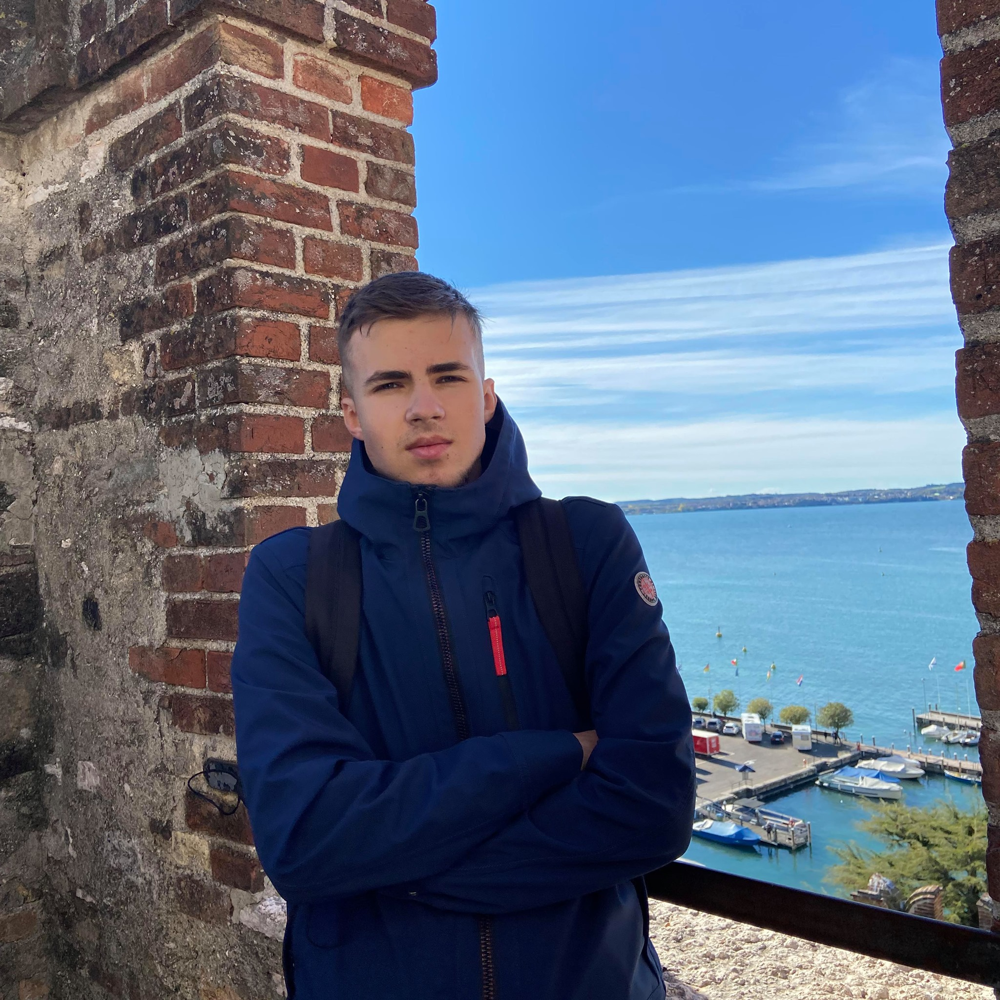

Man yra 19 metų, esu iš Panevėžio. Šiuo metu studijuoju Vilniaus universitete MIF Informatikos kursus, bei lankau CodeAcdemy Front-end kursus, taip pat ieškausi darbo Vasarai, tikriausiai dirbsiu Vilniaus oro uoste inspektoriaus pozicijoje, jei nesulauksiu geresnių pasiūlimų
Vaikystėje nuo darželio iki 5 klasės lankiau Shotokan Karate, vėliau nuo 5 klasės iki 12 klasės profesionaliai lankiau ir žaidžiau tinklinį, atstovavau Panevėžio komandą. 12 klasėje susidomėjau programavimu, lankiau python kursus metus laiko. Norėjau įstoti į Informacinių sistemų inžineriją, bet pritrūko šiek tiek balų, tai istojau į antrą pasirinkimą - Informatika. Kursas tikrai nelengvas, ypač pirmas semestras, nes labai daug įvairios matematikos (Žegalkino polynomos, Turingo mašina ir t.t.) ir mažai programavimo, bet 2 semestras lengvesnis ir įdomesnis.
Mėgstu klausyti hip-hop, undergorund stiliaus muziką, taip pat ir "oldchool" tipo paklausau. 6 Metus mokiausi ir grojau būgnais muzikos mokykloje, tai mėgdavau paklausyti roko, džiazo ir alternatyvaus metalo.
Laivalaikiu domiuosi motosportu (ypač motokrosu (neišsipildžiusi svajonė kolkas)), krepšiniu, filmais, tinkliniu ir apskritai sportu
Mano įdomi istorija - kartą esu "cheatines" per biologijos kontrolinį su suolo draugu naudodamas Morzės kodą:)
